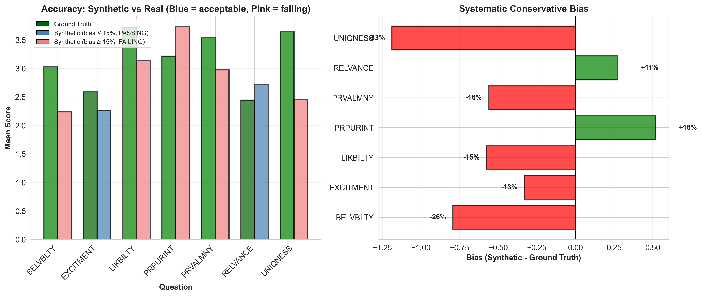
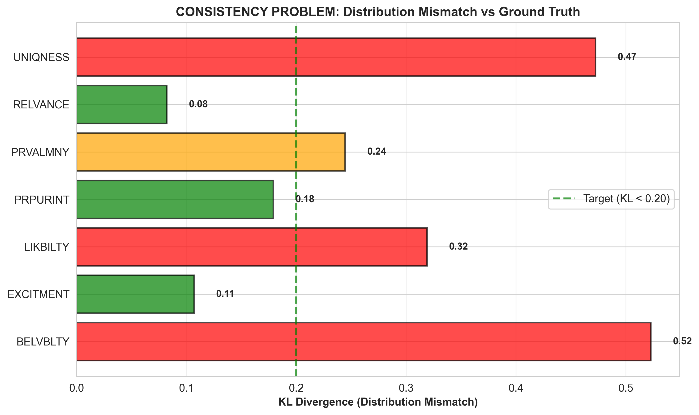
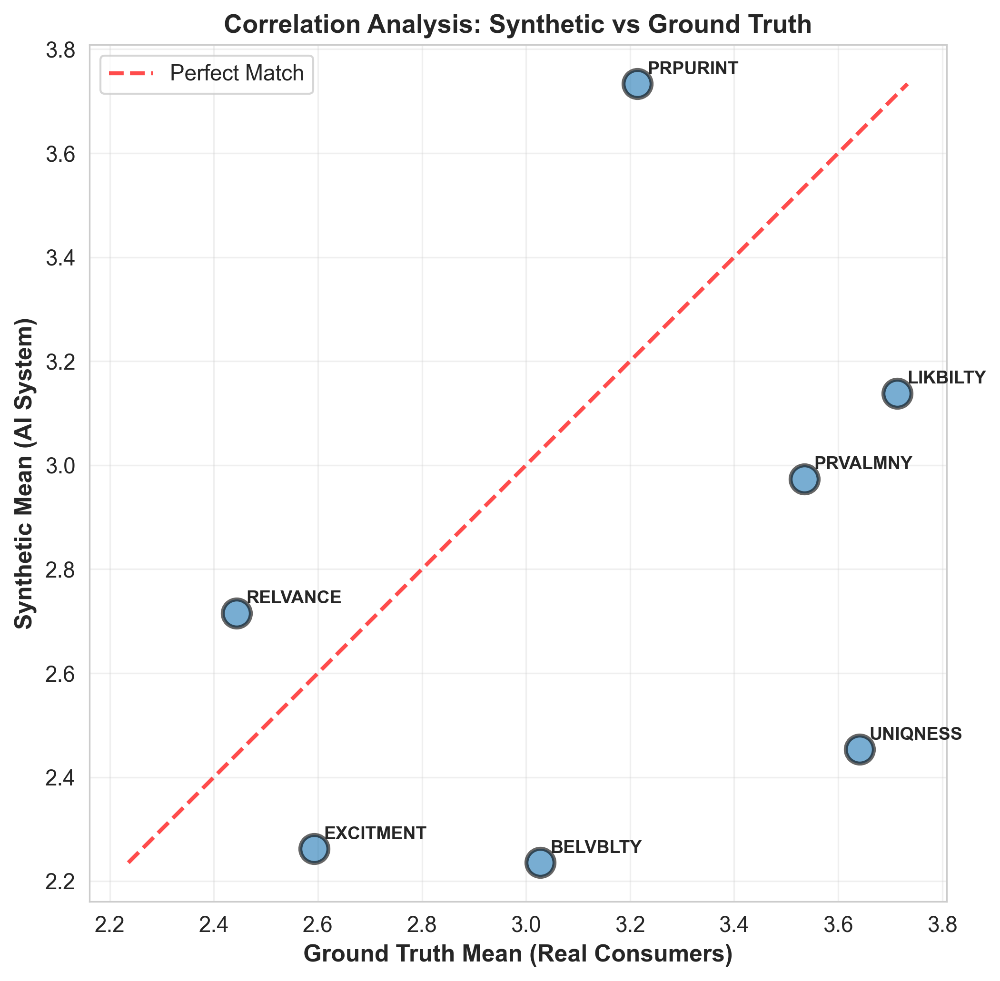

Date: January 5, 2026
Project: Kantar Synthetic Survey Replica
Author: Mark Stent
Purpose: Present testing results and experimental recommendations
We tested the synthetic survey system against 400 real Czech consumers across 7 question types. Results show construct-specific performance - some question types work, others don't.
The synthetic survey system uses a three-stage process to simulate human survey responses:
Synthetic respondents are generated with realistic demographics and psychographics including age, gender, occupation, category buyer behavior, brand preferences, and inertia levels. Each persona is screened using the same criteria as human recruitment to ensure comparability.
For each question, a large language model (GPT-4.1) receives:
The LLM generates a natural language response expressing how that persona would feel about the concept. Temperature is set to 0.5 to balance consistency with realistic variation.
The LLM's free-text response is converted to a numerical scale rating using semantic similarity:
System performance is measured by comparing synthetic responses to ground truth data from 400 real Czech consumers across 8 lottery scratchcard concepts:
The systematic conservative bias is NOT universal - it's construct-specific. This suggests the issue is in how the LLM interprets different question types, not the SSR methodology itself.
The synthetic survey system was tested across 7 standard market research constructs:
| Question Type | Definition | What It Measures | Scale |
|---|---|---|---|
| Excitement | How excited does this concept make you feel? | Emotional engagement and enthusiasm level | 4-point |
| Relevance | How relevant is this product to you personally? | Personal fit and applicability to respondent's life | 5-point |
| Purchase Intent | How likely are you to purchase this product at the stated price? | Willingness to buy and conversion likelihood | 5-point |
| Believability | How believable are the product claims and features? | Credibility and trustworthiness of concept description | 4-point |
| Uniqueness | How new and different is this product compared to others? | Perceived novelty and differentiation in category | 5-point |
| Likeability | How much do you like this product concept overall? | General positive or negative sentiment | 6-point |
| Value for Money | Does this product offer good value for the price? | Perceived worth relative to cost and alternatives | 5-point |

| Question | Definition | Accuracy | Consistency | Why It Works |
|---|---|---|---|---|
| Excitement | How excited does this concept make you feel? Measures emotional engagement and enthusiasm level. | -13% bias | KL=0.11 | Direct emotional response, 4-level scale |
| Relevance | How relevant is this product to you personally? Measures personal fit and applicability to the respondent's life. | +11% bias | KL=0.08 | Personal fit ("relevant to me"), clear progression |
Pattern: Concrete, emotional, personally-framed questions with simple semantic progressions.
| Question | Definition | Accuracy | Consistency | Issue |
|---|---|---|---|---|
| Purchase Intent | How likely are you to purchase this product at the stated price? Measures willingness to buy and conversion likelihood. | +16% bias | KL=0.18 | Good distribution match, but overestimates intent |
| Question | Definition | Accuracy | Consistency | Why It Fails |
|---|---|---|---|---|
| Believability | How believable are the product claims and features? Measures credibility and trustworthiness of the concept description. | -26% bias | KL=0.52 | Requires trust judgment, cultural context |
| Uniqueness | How new and different is this product compared to others in the category? Measures perceived novelty and differentiation. | -33% bias | KL=0.47 | Needs category expertise, wrong reference frame |
| Likeability | How much do you like this product concept overall? Measures general positive or negative sentiment toward the product. | -16% bias | KL=0.32 | Abstract preference, 6-level scale issues |
| Value for Money | Does this product offer good value for the price? Measures perceived worth relative to cost and competitive alternatives. | -16% bias | KL=0.24 | Value judgment, requires market knowledge |
Pattern: Abstract evaluative judgments requiring cultural/market context.

Results: 3 out of 7 questions achieve acceptable distribution matching (KL < 0.20):

| SSR Works Well For | SSR Struggles With |
|---|---|
|
|
Good News:
Challenge:
Recommendation:
Report Generated: January 5, 2026
Supporting Files: PRESENTATION_GUIDE.md, RESULTS_SUMMARY.md, PRESENTATION_REPORT.txt
Raw Data: data/validation/validation_metrics.csv